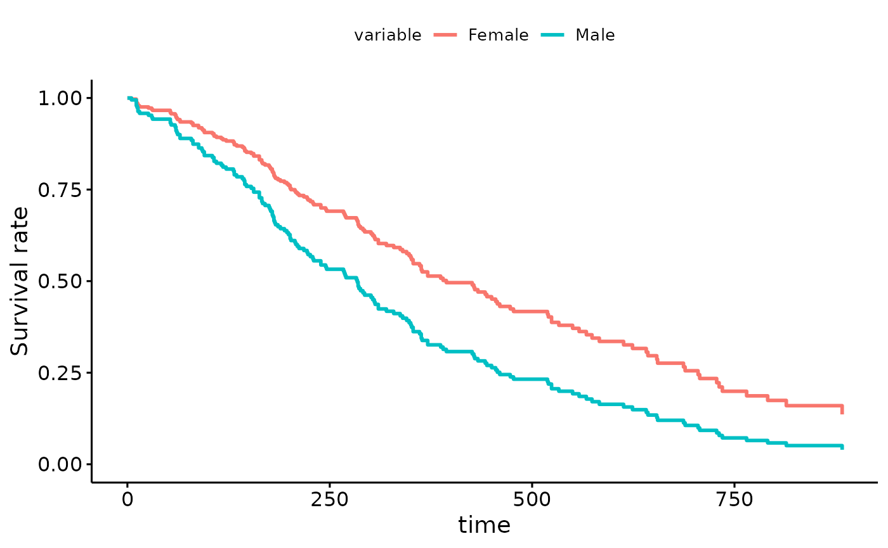
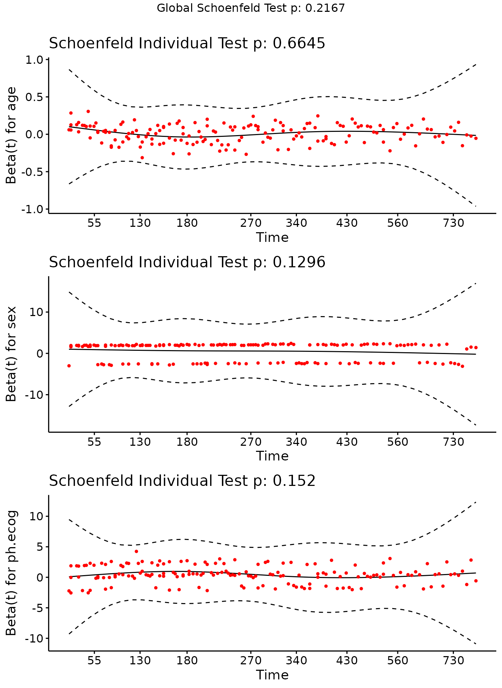
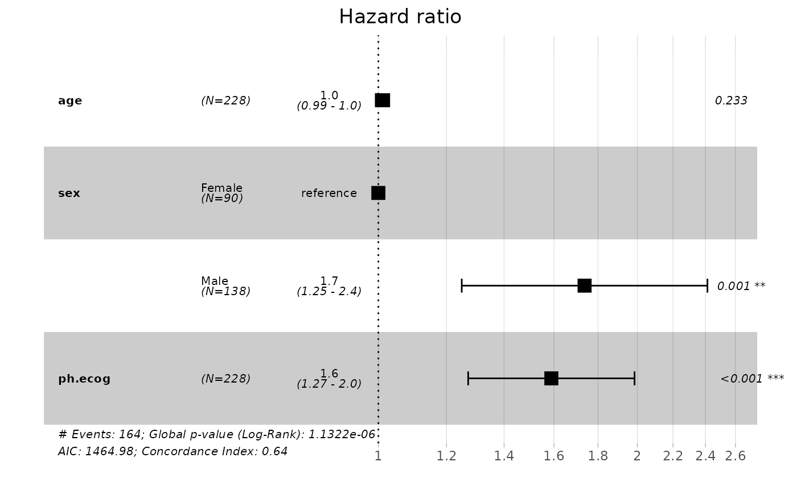

The Cox Proportional Hazard model1 2 is a regression model generally used in medical research to check the association between time to event and one or more covariables.
Let’s make an example with lung cancer dataset from
survival package. Check ?survival::lung if you want more
explanations about this dataset. Before load survivalGPU,
use your virtual python environment (see
vignette("python_connect")).
library(reticulate)
use_virtualenv(virtualenv = "survivalGPU")
# ?survival::lung
data <- lung
data$status <- lung$status - 1 # event variable now coded in 0 - 1 (instead of 1 - 2)
data$sex <- ifelse(lung$sex == 1, "Male", "Female")
head(data)
#> inst time status age sex ph.ecog ph.karno pat.karno meal.cal wt.loss
#> 1 3 306 1 74 Male 1 90 100 1175 NA
#> 2 3 455 1 68 Male 0 90 90 1225 15
#> 3 3 1010 0 56 Male 0 90 90 NA 15
#> 4 5 210 1 57 Male 1 90 60 1150 11
#> 5 1 883 1 60 Male 0 100 90 NA 0
#> 6 12 1022 0 74 Male 1 50 80 513 0You can realize the Cox model with the coxphGPU()
function, which is written in the same way as the
survival::coxph() function from survival package, with a
Surv object in the formula.
coxphGPU_bootstrap <- coxphGPU(Surv(time, status) ~ age + sex + ph.ecog,
data = data,
bootstrap = 50,
ties = "breslow")
#> [KeOps] Warning : Cuda libraries were not detected on the system ; using cpu only mode
# bootstrap at 50 for this example, but normally it's more.You obtain with summary all results for initial model,
and a confidence interval for estimated coefficients with bootstrap.
summary(coxphGPU_bootstrap)
#> Call:
#> coxphGPU.default(formula = Surv(time, status) ~ age + sex + ph.ecog,
#> data = data, ties = "breslow", bootstrap = 50)
#>
#> n= 227, number of events= 164
#> (1 observation deleted due to missingness)
#>
#> coef exp(coef) se(coef) z Pr(>|z|)
#> age 0.011041 1.011102 0.009267 1.191 0.233
#> sexMale 0.551890 1.736531 0.167742 3.290 0.001 **
#> ph.ecog 0.462947 1.588749 0.113574 4.076 4.58e-05 ***
#> ---
#> Signif. codes: 0 '***' 0.001 '**' 0.01 '*' 0.05 '.' 0.1 ' ' 1
#>
#> exp(coef) exp(-coef) lower .95 upper .95
#> age 1.011 0.9890 0.9929 1.030
#> sexMale 1.737 0.5759 1.2500 2.412
#> ph.ecog 1.589 0.6294 1.2717 1.985
#>
#> Concordance= 0.637 (se = 0.025 )
#> Likelihood ratio test= 30.41 on 3 df, p=1e-06
#> Wald test = 29.84 on 3 df, p=1e-06
#> Score (logrank) test = 30.41 on 3 df, p=1e-06
#>
#> ----------------
#> Confidence interval with 50 bootstraps for exp(coef), conf.level = 0.95 :
#> 2.5% 97.5%
#> age 0.992533 1.02768
#> sexMale 1.250470 2.59782
#> ph.ecog 1.289350 1.99273coxphGPU are objects that inherit from a coxph object, so it’s
possible to use other packages that use coxph objects, such as
survminer to draw some visualisations for Cox results.
You can plot adjusted survival curves with
survminer::ggadjustedcurves().
survminer::ggadjustedcurves(coxphGPU_bootstrap,
variable = "sex",
data = data)
This plot shows you survival curves for each sex group, adjusted on the effects of age and ECOG performance score. The result of is plot is that the female survival rate is higher than the male survival rate in time.
If you have no model, it’s possible to estimate survival curves with
Kaplan-Meier estimation by survival::survfit(), and you can
use survminer::ggsurvplot() to plot a Kaplan-Meier survival
curve.
You can test the proportional hazards assumption for a Cox regression
with survival::cox.zph() :
cox.zph(coxphGPU_bootstrap)
#> chisq df p
#> age 0.188 1 0.66
#> sex 2.297 1 0.13
#> ph.ecog 2.052 1 0.15
#> GLOBAL 4.451 3 0.22Rejection of the null hypothesis (correlation between the Schoenfeld
residuals and ranked failure time is zero) leads to a conclusion that
the PH assumption is violated. And plot scaled Schoenfeld residuals
against the time for each covariates with
survminer::ggcoxzph() function from survminer
package.

If you see a violation of the PH assumption, you can test :
* interaction \(covariate*time\) term
(not currently implemented in survivalGPU)
* stratification
Also with the survminer package, you can use
survminer::ggforest() function to plot forestplot for Cox
PH model. The confidence interval plotted is the confidence interval by
the normal distribution (not bootstrap)
survminer::ggforest(model = coxphGPU_bootstrap,
data = data)